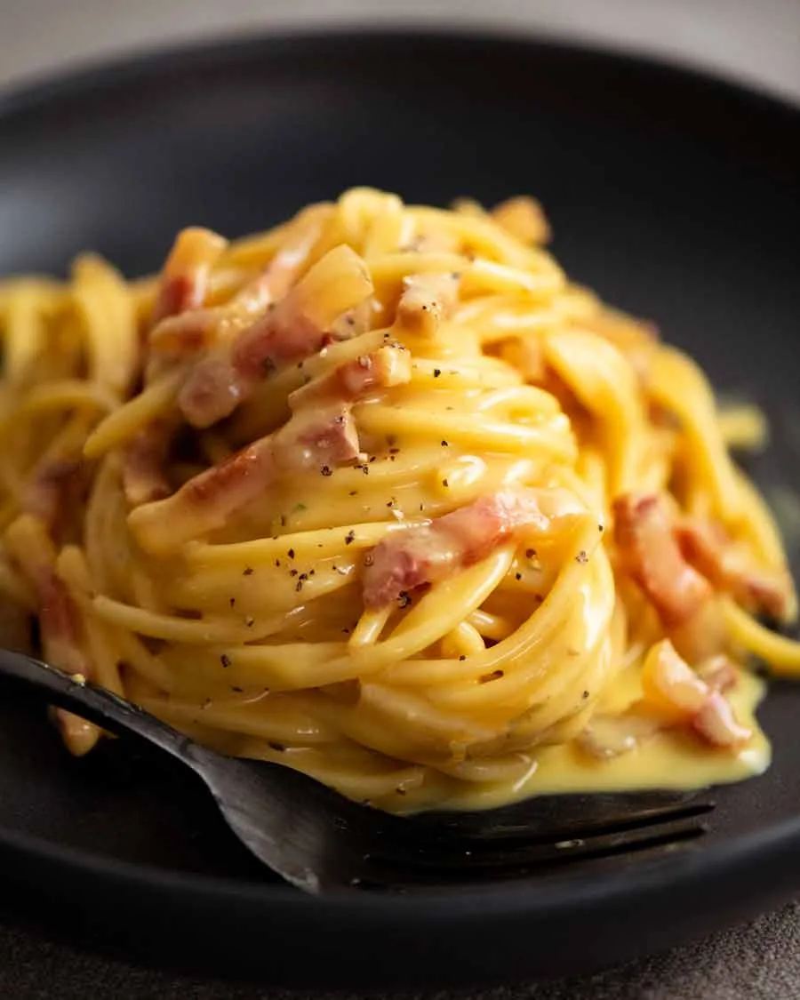

Carbonara Pasta

Description
Carbonara is a classic Italian pasta dish from Rome made with hard cheese, eggs, cured pork, and black pepper. It is globally celebrated for its rich, velvety texture, which is achieved without using any cream or butter.
Ingredients
- 12 oz Pasta (Spaghetti or Rigatoni)
- 5 oz Meat (Guanciale or Pancetta)
- 50g Cheese (Peccorino or Parmesan)
- 4 eggyolks and 1 whole egg
- 1 pinch of salt
- 1 tbsp fresly cracked black pepper
Steps
- Boil the Pasta: Bring a large pot of salted water to a boil. Cook your pasta until it is just al dente (usually 1-2 minutes less than the package instructions). Reserve 1 cup of starchy pasta water right before draining.
- Render the Meat: While the pasta cooks, heat a large skillet over medium-low heat. Add the diced guanciale or pancetta. Cook for 5-7 minutes until the fat renders completely and the meat turns beautifully golden and crispy. Turn off the heat.
- Build the "Carbocream": In a medium mixing bowl, vigorously whisk together the 4 egg yolks, 1 whole egg, grated cheese, and plenty of freshly cracked black pepper until it forms a thick, smooth paste. Whisk in 1 tablespoon of the warm rendered pork fat from the skillet to temper the mixture.
- Emulsify the Sauce (The Crucial Step): Pour the egg and cheese mixture over the pasta. Immediately begin tossing and stirring rapidly. Splash in about 1/4 to 1/2 cup of your reserved hot pasta water. The residual heat from the pasta will melt the cheese and cook the eggs into a glossy, velvety sauce rather than curdling them.
- Garnish and Serve: Plate immediately while hot. Top with an extra dusting of grated cheese and a final turn of the pepper mill.
Home